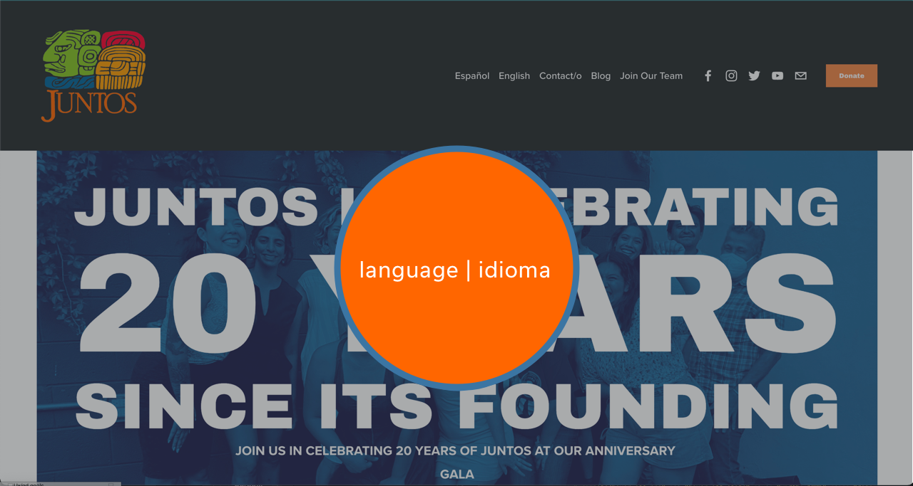
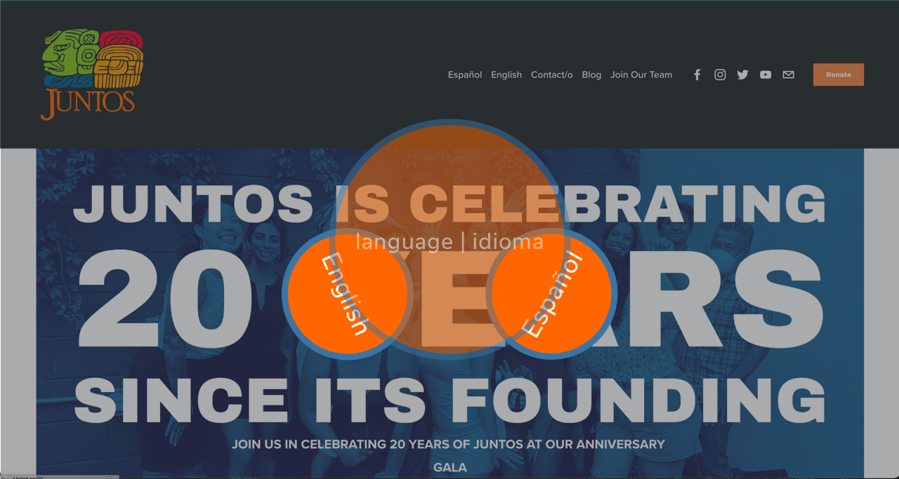
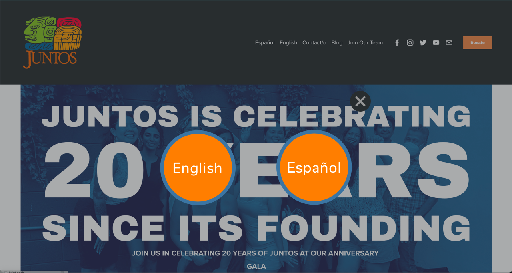

User lands on the homepage when going to Website. Opaque layer that darkens homepage is present upon opening.
Informational button, "language | idioma" simultaneously fades and grows into the center of the page. Holds on screen for 2s.
Center "language/idioma" circle starts to fade-out, while language option circles roll out from either side. The circles will land in a legibal position and remain till clicked.
X-out mark fades in upper right-hand corner.
If English is clicked, user is sent to home page. If Español is clicked, user is sent to the Español about page.
Feedback
User lands on the homepage when going to Website. Opaque layer that darkens homepage is present upon opening.
Informational button, "language | idioma" simultaneously fades and grows into the center of the page. Holds on screen for 2s.
Center "language/idioma" circle starts to fade-out, while language option circles roll out from either side. The circles will land in a legibal position and remain till clicked.
X-out mark fades in upper right-hand corner.
If English is clicked, user is sent to home page. If Español is clicked, user is sent to the Español about page.
Loops & Modes
No Loops.
New information/modes includes: opaque background,



Content use discloser: All content used from vamosjuntos.com used for non-commerical, educational purposes.